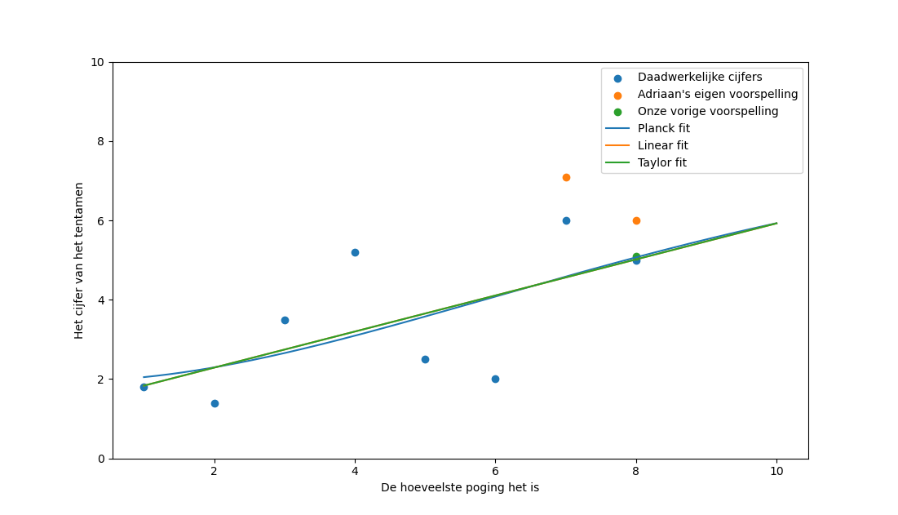

Heeft Adriaan mechanica al gehaald?
Nee
Maar hij gaat nog naar de inzage voor (hopelijk) een hoger cijfer
En we voorspellen dat hij voor zijn volgende tentamen een 5.5
gaat halen
Hij heeft al 8 tentamens gemaakt, en volgens onze lineaire fit zal hij zijn 9e tentamen eindelijk halen
